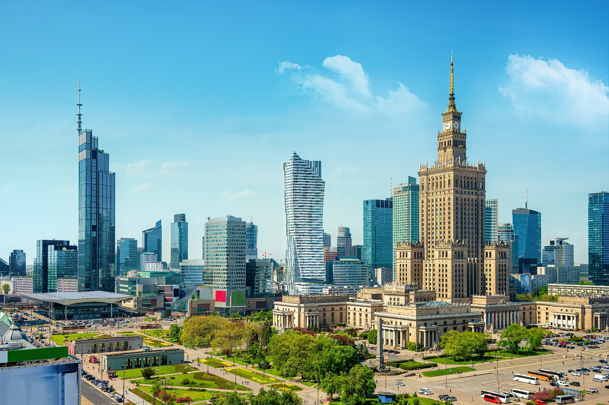
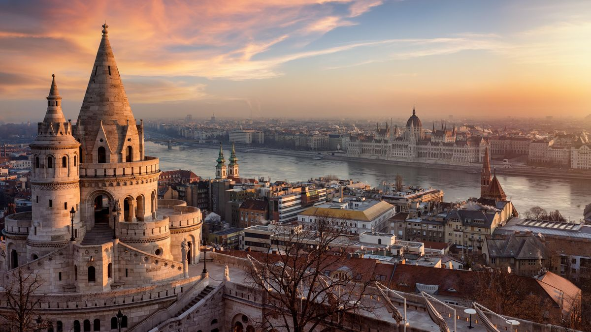
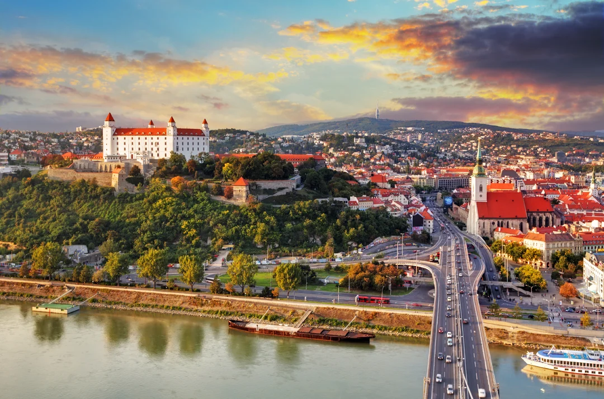
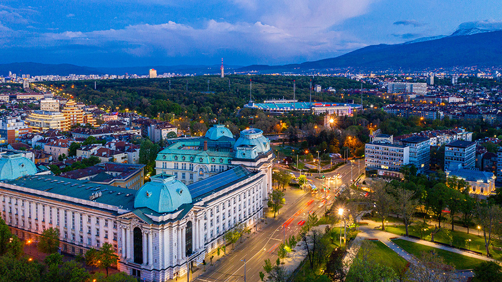

Východní Evropa
Východní Evropa zahrnuje země jako Polsko, Maďarsko, Česká republika, Slovensko, Rumunsko a Bulharsko. Region je bohatý na historii, kulturní památky, hrady, kostely a přírodní krásy. Najdete zde rozlehlé nížiny, pohoří, řeky a jezera. Východní Evropa je ideální pro cestovatele, kteří chtějí poznat historická města, kulturní tradice a zároveň užít přírodu a gastronomii.
Polsko
Hlavní město: Varšava. Polsko nabízí historická města Krakow a Gdaňsk, staré městské jádro, hrady a kostely. Tatry a Beskydy lákají turisty na turistiku, zimní sporty a přírodní scenérie. Polsko je známé také bohatou kuchyní a kulturními festivaly.
Maďarsko
Hlavní město: Budapešť. Maďarsko je proslulé termálními lázněmi, Dunajem, historickými budovami a mosty. Budapešť nabízí Parlament, Buda Castle a lázeňské komplexy. Turisté ocení i malebné vesnice a vinařské oblasti.
Česká republika
Hlavní město: Praha. Česká republika nabízí historické památky, hrady a městská jádra. Praha je známá Karlovým mostem, Pražským hradem a Staroměstským náměstím. Česká krajina je ideální pro turistiku, cykloturistiku a objevování tradic.

Slovensko
Hlavní město: Bratislava. Slovensko je známé Tatrami, jeskyněmi, hrady a malebnou přírodou. Bratislava nabízí historické centrum, hrady a kulturní akce. Země je ideální pro turistiku, lyžování a poznávání folklóru.
Rumunsko
Hlavní město: Bukurešť. Rumunsko je známé Transylvánií, hradem Drákuly, Karpaty a černomořským pobřežím. Bukurešť nabízí historické památky, muzea a kulturní život. Turisté mohou objevovat hory, vesnice a tradiční kuchyni.

Bulharsko
Hlavní město: Sofie. Bulharsko nabízí historická města, pohoří Rila a Pirin, černomořské pláže a staré kláštery. Sofie je kulturním centrem s kostely a muzei. Bulharsko je ideální pro kombinaci přírody, historie a odpočinku u moře.
